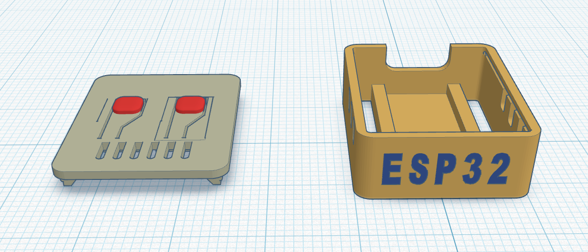
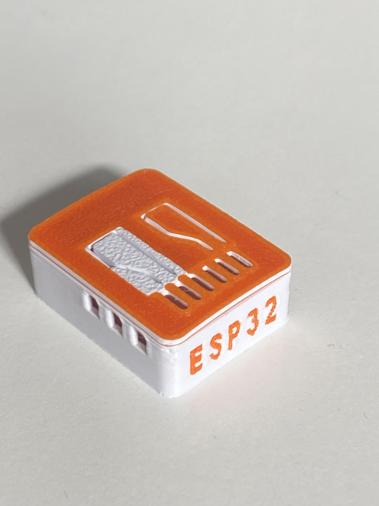

Final Design
This is the final design of the ESP32-C3 Zero case. This page will detail the improvements and changes made from the previous prototypes.
3D Model

3D Print

Improvements from previous prototype
Small adjustments made to the final design include a redesign of the button with added tactile feedback, colour and improved ergonomics. The final design includes a more consistent visual with the two tone colour scheme, displaying the case model number clearly on the surface.
Comparison with Previous Prototypes
| Test Area | Prototype 1 Result | Prototype 2 Result | Improvement Made | Remaining Issue |
|---|---|---|---|---|
| Fit | Lid was slightly bent | Lid fit better | Adjusted lid thickness | Thin nature of the lid remains fragile due to filament constraints. |
| USB access | Good fit | Unchanged | Unchanged | Slight hole on bevel edges may introduce moisture |
| Pin/button access | Buttons hard to press | Added texture to assist function | Added even more texture with larger shape | Buttons remain flimsy and may become damaged |
| Ventilation | Good ventilation | Unchanged | Unchanged | We believe ventilation from P1 was sufficient |
| Strength | Slightly too thin | Lid fits better | Changed lid insert to fit in better | Still slightly flimsy |
| Print quality | Texture slightly off | Printed smoother | Added multiple colours for visual appeal | Better filament could be used to improve print quality |
Final thoughts
The final design successfully addresses the issues identified in the previous prototypes, providing a robust and user-friendly solution for protecting the ESP32-C3 Zero. It meets the requirements for protection, accessibility, and visual appeal. This design provides the user with a reliable and aesthetically pleasing option for their ESP32-C3 Zero while also keeping printing times low and cost effective.